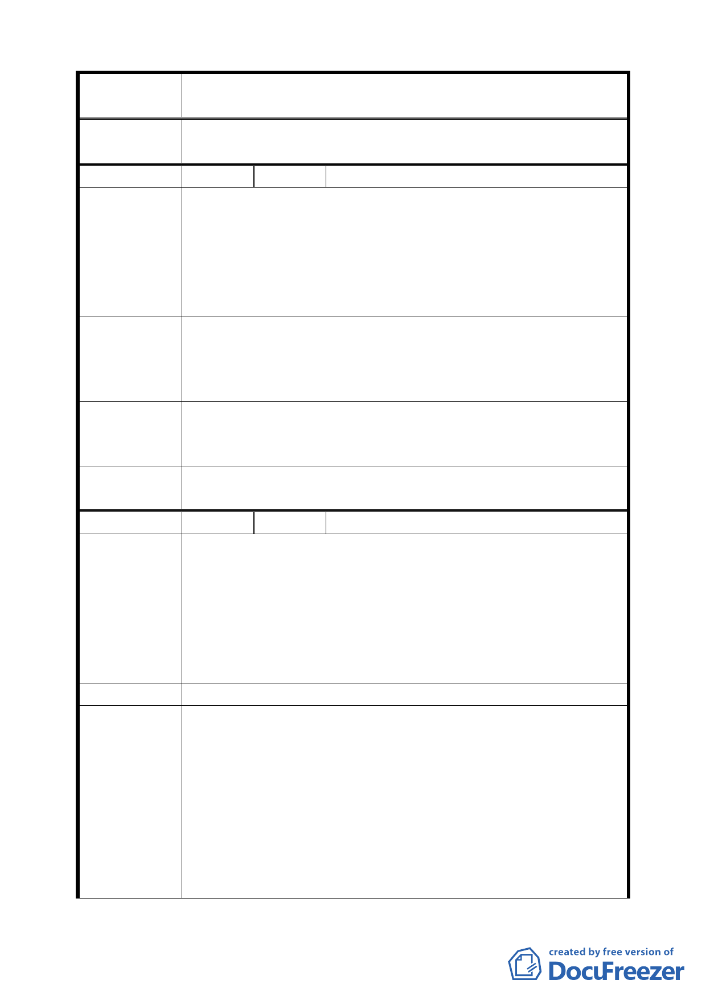

案 名 臺北市文山區都市計畫通盤檢討（主要計畫）案
委員會議
決議
依專案小組審查結論辦理。
編 號 ３０ 陳情人 國立政治大學（09430082700）
建議位置：指南山莊（政大段三小段 12﹍地號等 82 筆土地，
面積共計 110342 平方公尺）。
陳 情 理 由 建議理由：
（ 政 大 ） 本校為校務發展及擴充需要，配合指南山莊精實案及精進案
進度暨強化政大生活圈教育文化功能及大學城國際化整體意
象塑造，辦理用地變更。
一、機關用地部分變更為政治大學用地（0.1380 公頃）及部
建議辦法
分變更為保護區（3.8962 公頃）。
二、公有土地部分由本校依法辦理撥用取得，私有地部分依
規定辦理價購或徵收。
專案小組
審 查 結 論 維持原計畫。
（94.11.24）
委員會議
決議
依專案小組審查結論辦理。
編 號 ３１ 陳情人 國立政治大學（09430082700）
建議位置：老泉段一小段 103、154、196、197、199、199-1、
199-1、200、200-1、205、205-1、206、206-1、209、209-1、
陳情理由
（政大）
210、211、212 等 18 筆土地，約 8440 平方公尺。
建議理由：
景美溪南岸渡賢橋至恆光橋段堤防用地已完成分割並興築
中，堤岸以南農業區部分校地應變更為政治大學用地，以符
實際。
建 議 辦 法 農業區變更為政治大學用地。
一、景美溪南岸渡賢橋至恆光橋段堤防用地以南之農業區，
老泉段 1 小段 196、197、199、199-1、199-2、200、200-1、
專案小組
審查結論
（94.7.11）
（94.11.24）
205、205-1、206、206-1、209、209-1、210、211、574-11
地號等 16 筆土地，同意變更「農業區為大學用地（供政
治大學使用）」。另老泉段 1 小段 103、154 地號位於老泉
里計畫案內，同意納歸該案審議。
二、堤岸以南農業區部分，同意變更為「大學用地（供政治
大學使用）」。
二〇